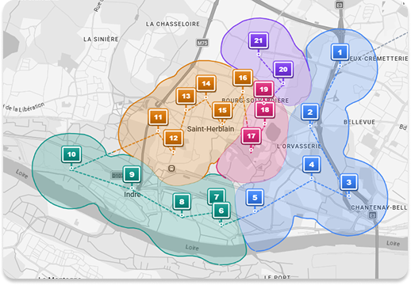

Livrez plus.
Adapte ton trajet

Ne subis plus les aléas de tes tournées. ATEQO optimise, tu choisis.
Organise ta journée

Organise très simplement tes points d'arrêt par secteur, même dans les quartiers les plus denses.
Moins de temps sur la route
Booste ta productivité et réduis tes kilomètres.
Gérez mieux.
Enregistre tes tournées

Crée tes tournées, enregistre tes adresses favorites et ajoute-les en un clic.
Saisie vocale

Gagne du temps : ajoute une adresse simplement avec ta voix.
Prêt à optimiser ta tournée ?
Ta première tournée optimisée en moins d'une minute.